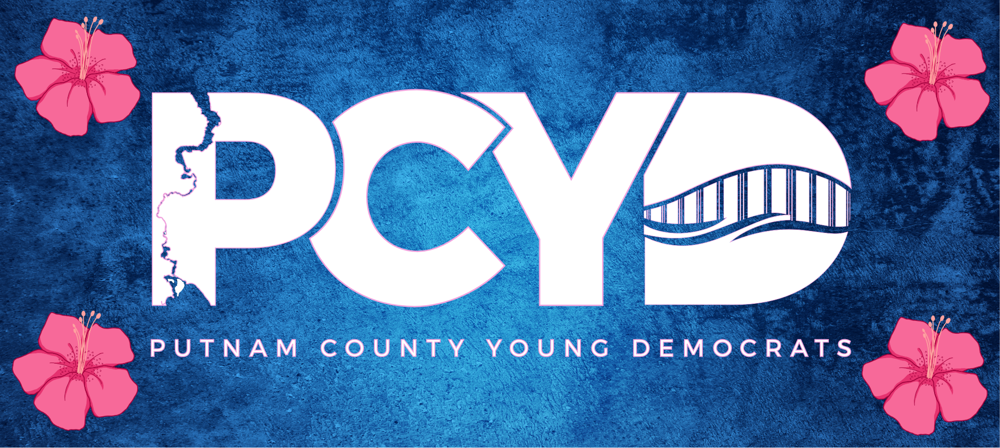

PCYD is organizing a new generation of local leaders, volunteers, and precinct-level party members right here in Putnam County, Florida.
Get Involved Upcoming EventsPCYD focuses on five core areas to strengthen Democratic organizing at the county level.
Build a structured local organization with clear responsibilities, regular meetings, and meaningful follow-up for young Democrats and left-leaning residents.
Prepare members for precinct seats, committee work, campaign activity, voter registration, and future DEC service.
Support lawful voter registration and education efforts ahead of the 2026 primary and general elections.
Organize gatherings, educational events, and community activities that increase local Democratic visibility and participation.
Build the local Democratic bench by preparing members for county party operations, especially precinct-level service.
Putnam County's median household income is $47,934 and over 20% of residents live below the poverty line. PCYD exists to give working families, students, and young adults a practical entry point into civic life and Democratic organizing.
Whether you want to run for a precinct seat, help with voter outreach, or just show up and learn, there is a place for you here.
Join PCYD